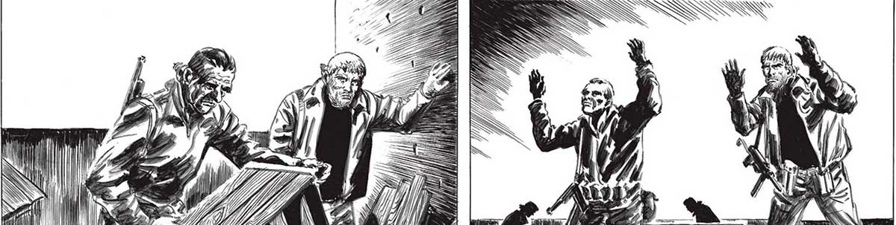
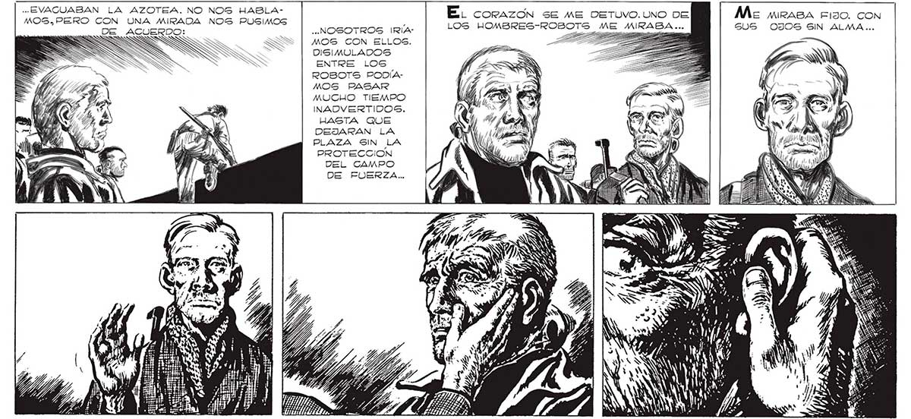

Ímré en ON TODO AL HOMBRE-ROBOT mas cer- ¡Mon El TROPECÉ CONTRA LA INVISIBLE PACANO A MÍ, BUSQUÉ CON EL EN LUGARES ABSURDOS... RED QUE NOS IMPEDÍA LA RETIRADA... SS SS y 279 RespoirÉ. El DESESPERADO PLAN DE EA: VALL! RESULTABA... LOS HOMBRES-ROBOT | NP ALEM) QU L, SN WINS NE MY > E A IA di SW, BS y QUA 774 WI: EBK 1 Y dl IAN SN y CAN Jl Hd Al -.EVACUABAN LA AZOTEA. NO NOS HABLAMOGS,.PERO CON UNA MIRADA NOS PUSIMOS E. corazón se ME DETUVO.UNO DE Me mrasa edo. con cto ls LOS HOMBRES-ROBOTS ME MIRABA ... GUS OJOS SIN ALMA... MOS CON ELLOS. i >> => DISIMOLADOS 6 ENTRE LOS ROBOTS PODÍAMOS PASAR MUCHO TIEMPO INADVERTIDOS. HASTA QUE DEJARAN LA PLAZA SIN LA PROTECCION DEL CAMPO DE FUERZA...

